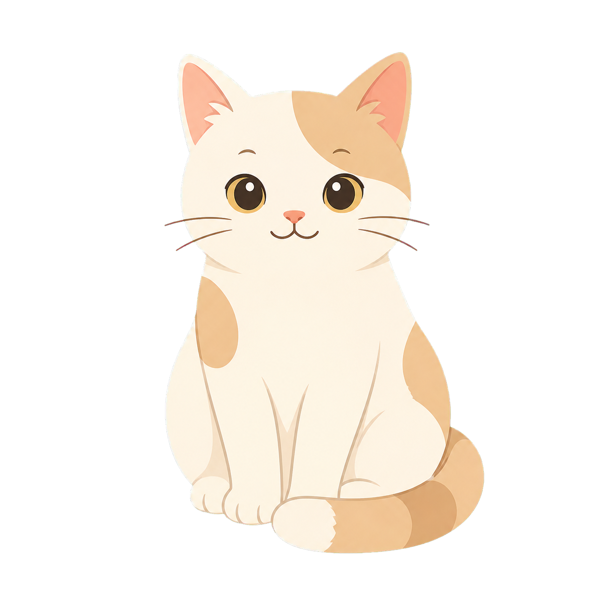

‹
猫の記録をすぐ残せる
投薬、給餌、目薬、食事、排便の時刻をワンタップで保存します。

✓
記録
＋
登録
登録中の猫
0匹
猫の登録
ホーム
猫追加
猫一覧
ホーム表示
写真を選択
写真の位置調整
左右の中心
上下の中心
拡大・縮小
写真を確定
写真を外す
名前
性別
未選択
メス
オス
不明
生年月日
保護月日
体重
病歴
備考
記録する項目
追加
保存する
猫一覧
ホーム表示
大きな見出し
説明文
一覧の見出し
表示を保存
記録
ホーム
ケア
履歴
設定
メモ
未記録
記録
本当に削除しますか
戻る
削除